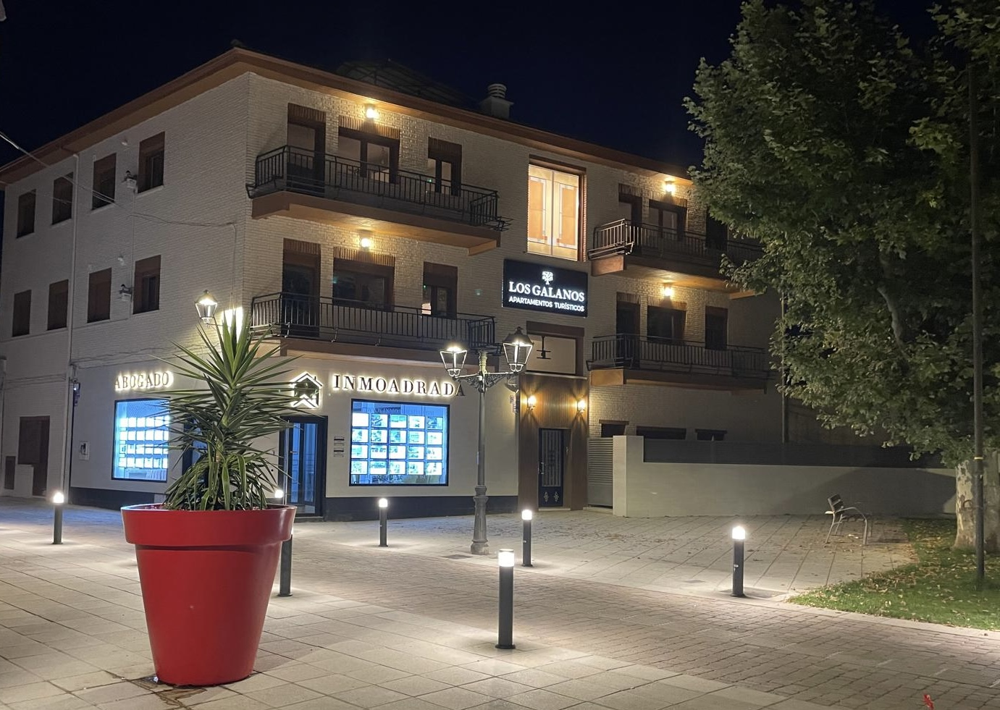
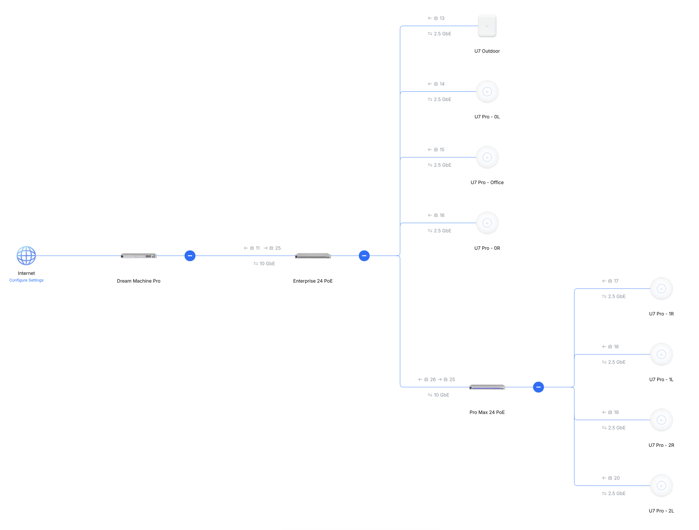
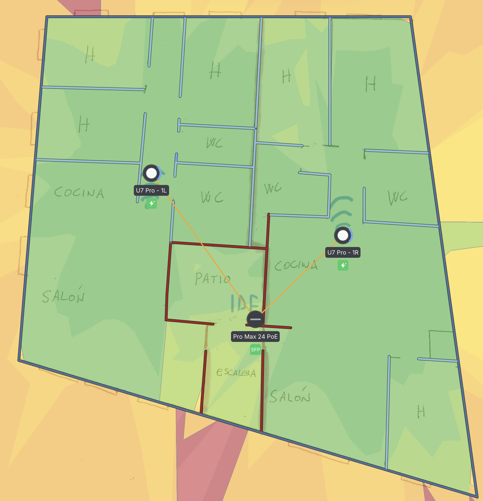
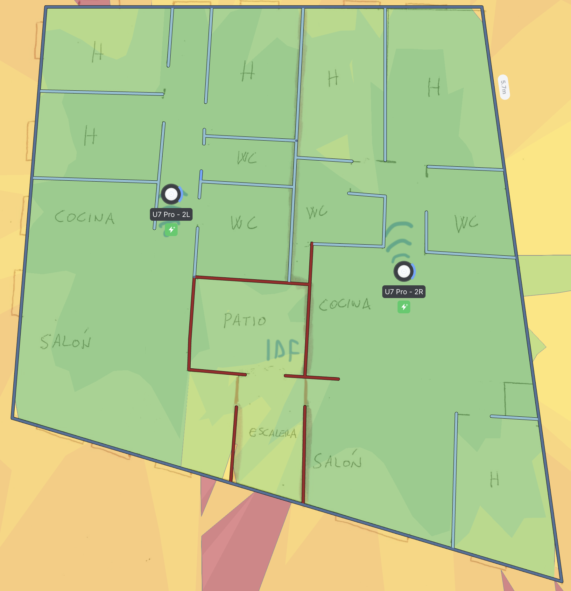
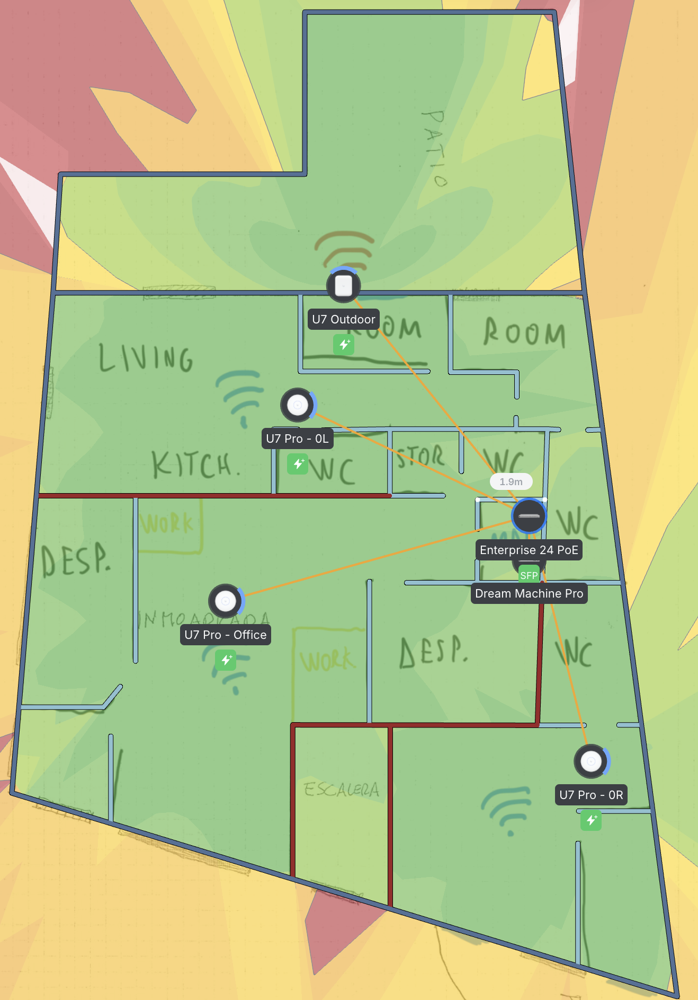
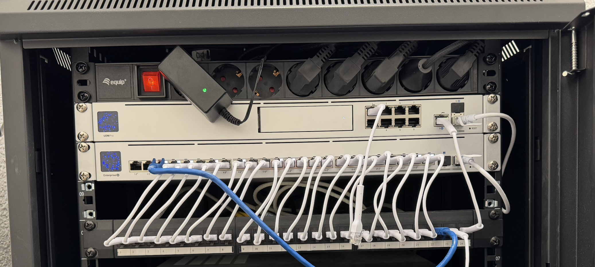
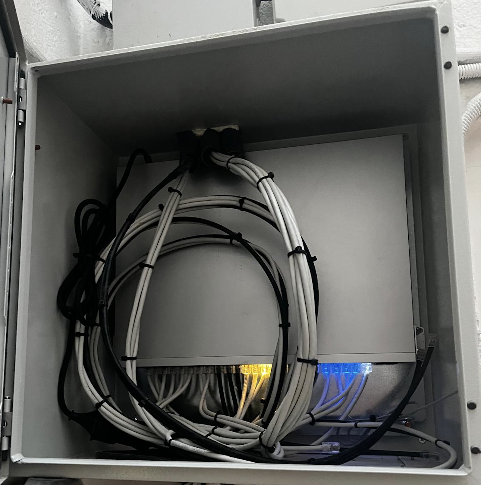
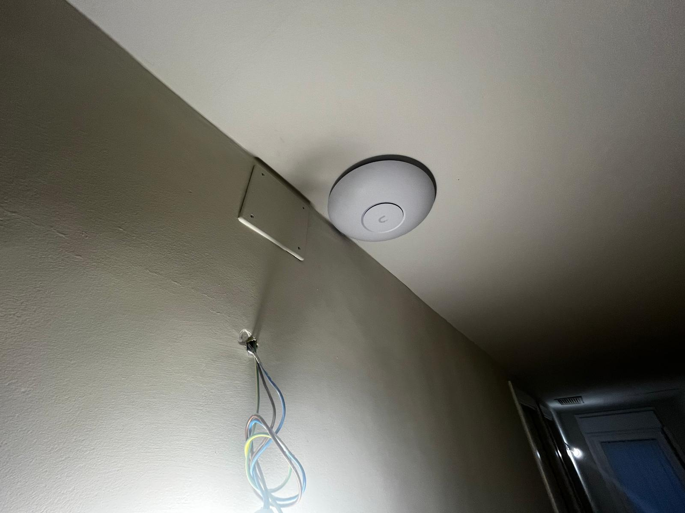
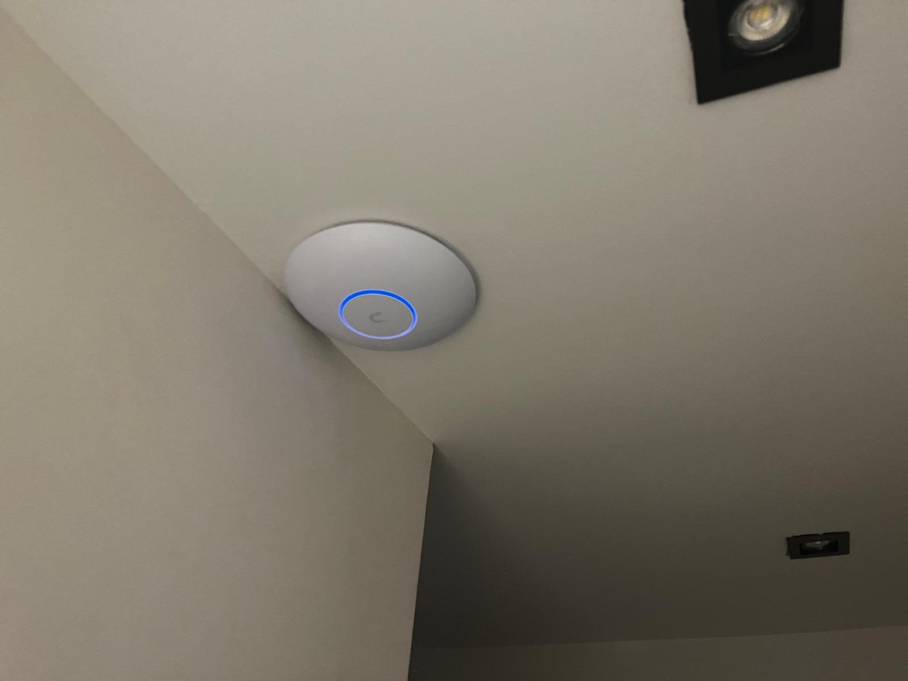

Network Expansion for Multi-Unit Building
2024 • Enterprise WiFi, UniFi, Structured Cabling, Hospitality

Summary
This project documents the design and deployment of a network expansion carried out during an internship at a real estate company that extended its business model from traditional property sales into short-term rentals.
The network architecture and implementation were designed and executed by me as part of the infrastructure upgrade required for this expansion. The existing office network was based on an ISP router and an unmanaged switch, with no segmentation, no central management and limited room for growth.
Following the acquisition of an entire residential building to host six independent rental units plus the office itself, the network had to be redesigned to support a mixed-use environment. The new design is based on Ubiquiti's UniFi lineup, a Software-Defined LAN architecture that ensures performance, scalability and maintainability, while being cost-effective and subscription-free.
Motivation
The company transitioned from operating a single office to managing multiple short-term rental units in the same building. This change introduced requirements that the original ad-hoc office network could not meet:
- Independent and reliable connectivity for each apartment.
- Clear separation between office systems and guest traffic.
- Consistent WiFi coverage across all units and common areas.
- Capacity for future services such as IP cameras and additional IoT devices.
At the starting point, the network consisted of an ISP-provided WiFi router and an unmanaged switch feeding a set of data lines to office workstations. The goal of the project was to replace this with a structured, manageable and scalable network comparable to a small enterprise or hospitality deployment.
Requirements
Technical Requirements
- Centralised routing, firewalling and management.
- Managed PoE switching for access points and future IP devices.
- Logical separation between office, guest and management networks.
- High-performance WiFi with coverage in all apartments, the office and the courtyard.
- 10 Gbps uplinks between network cabinets to avoid bottlenecks.
- Structured cabling that anticipates future services without additional civil works.
Operational Requirements
- Minimal disruption to ongoing office activity during migration.
- Simple operation for non-technical staff via a central management interface.
- Stable connectivity for guests, even under high occupancy.
- Clean and maintainable installation in line with the building’s commercial use.
Design
The entire network architecture, physical layout and technology selection were defined from scratch as part of this project, based on the business requirements and the physical characteristics of the building.
Building Layout
The building consists of a ground floor and two upper floors:
- Ground floor: real estate office, two additional apartment units and a shared courtyard.
- First floor: two independent apartments.
- Second floor: two independent apartments.
Two main network locations were defined:
- Main rack (office): edge routing, firewall and office distribution.
- Secondary rack (residential): distribution to all apartment terminations.
Core Network Infrastructure
The core of the new network is built around UniFi hardware:
- UniFi Dream Machine Pro (UDM Pro): edge gateway providing routing, firewalling, VPN and UniFi controller services.
- UniFi Enterprise 24 PoE: main office switch supplying PoE to office access points and wired endpoints.
- UniFi Pro Max 24 PoE: distribution switch for the residential units, installed in a separate cabinet closer to the apartments.
The two racks are connected using a 10 Gbps SFP+ uplink, ensuring that the backbone does not become a bottleneck as the number of clients and services grows. A second link, disabled by Spanning Tree Protocol, is in place in the event of a failure from the main link.

Structured Cabling
A new Cat 6 structured cabling system was installed to support:
- 2.5 GbE uplinks to each UniFi U7 Pro access point.
- Dedicated Ethernet runs to each apartment for smart TVs.
- Additional Ethernet runs per apartment to allow flexibility for future devices.
- Cabling to potential IP camera locations in common areas such as stairwells and the courtyard.
Extra cabling was also installed:
- Between racks, to allow additional uplinks or redundancy in the future.
- From the main rack to the rooftop, in case a backup satellite or 5G link is deployed later.
This approach avoids the need to reopen walls or conduits if the business decides to add services later on.
Wireless Deployment & RF Planning
The existing WiFi was replaced with a WiFi 7 deployment based on:
- UniFi U7 Pro: tri-band WiFi 7 access points (2.4 / 5 / 6 GHz).
- UniFi U7 Outdoor: WiFi 7 access point for the courtyard.
A total of 8 access points were installed:
- One UniFi U7 Pro per apartment (six units).
- One UniFi U7 Pro for the office.
- One UniFi U7 Outdoor for the courtyard.



Channel planning was performed to maximise separation between equal channels and reduce co-channel interference. The 2.4 GHz, 5 GHz and 6 GHz bands were used in a coordinated way, prioritising consistency and stability over theoretical peak throughput.
Logical Segmentation
Traffic is logically segmented into multiple VLAN-backed networks, including:
- Office LAN for business systems and staff devices.
- Guest network with per-device Layer 2 isolation.
- Management network for infrastructure devices.
- IoT and cameras network for future services.
This segmentation provides isolation between office and guests, limits the blast radius of potential issues and simplifies troubleshooting.
Implementation
Implementation was carried out following the defined architecture, starting with the deployment of the core routing and switching infrastructure in the office rack and continuing with the installation of the residential distribution switch.
Once the core was in place, structured cabling was terminated and tested across all apartments and common areas. Access points were installed and adopted into the UniFi controller, and their placement and transmit power were fine-tuned based on on-site measurements.
Network segmentation was implemented using VLANs and corresponding SSIDs for guest and office networks. The final cutover from the legacy ISP router to the UDM Pro was performed in a controlled window to minimise disruption to day-to-day office operations.
Installation Gallery




Results
The new infrastructure provides:
- Stable, high-performance connectivity for office staff.
- Reliable WiFi coverage in all apartments and in the courtyard.
- Clear separation between business and guest traffic.
- Centralised management and monitoring through the UniFi interface.
The installation also lays the groundwork for future services such as IP cameras, additional IoT devices or a backup WAN link, without the need for further structural changes.
What I Learned
- Enterprise-style networking is as much about planning and future-proofing as it is about raw bandwidth.
- Logical segmentation, cabling and RF planning have to be designed together to produce a coherent system.
- Careful channel planning becomes critical once multiple access points share the same building.
- Investing in spare cabling and clear rack organisation dramatically simplifies later expansions.
- Working in a real commercial environment highlighted the importance of minimising downtime and making the network manageable for non-technical users.